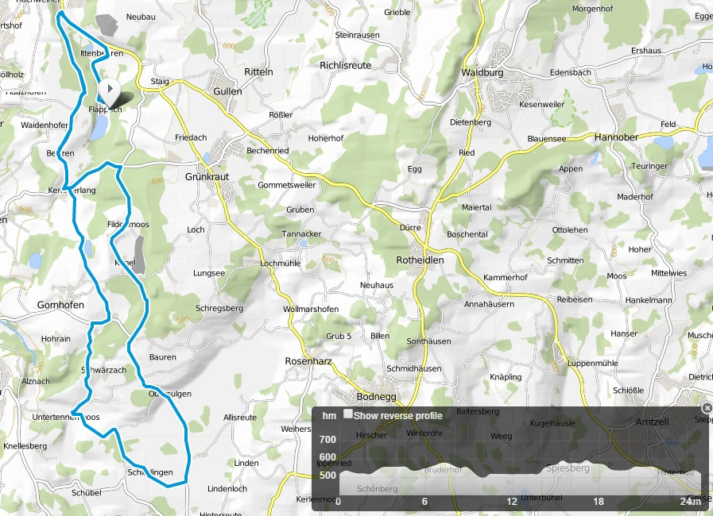
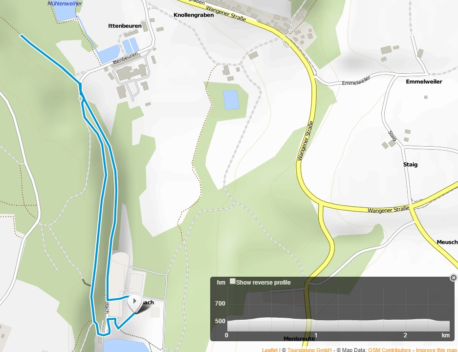
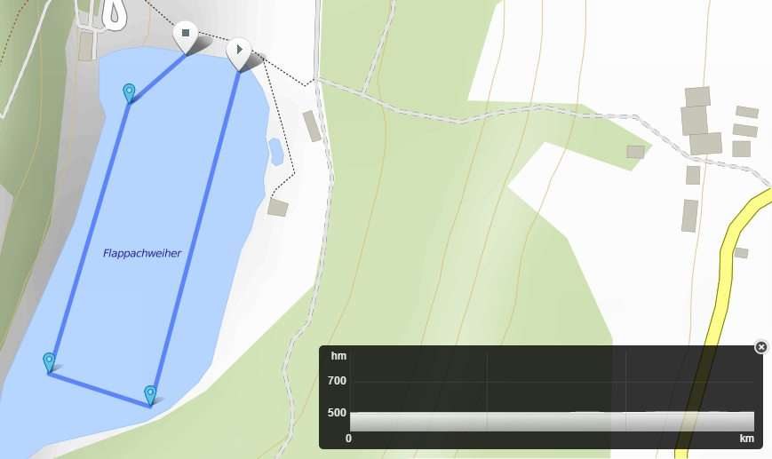
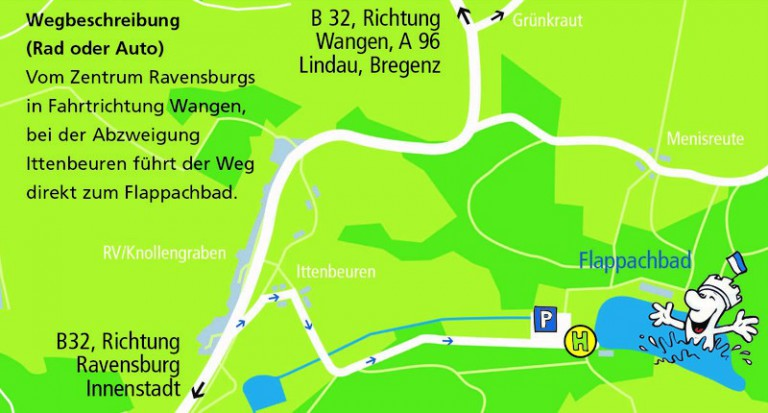

Samstag, 1. August 2026 · Flappachbad Ravensburg · Mazda-Dämpfle-Sprint-Cup — Veranstalterseite
| Veranstaltung | 41. Ravensburger Triathlon, Mazda-Dämpfle-Sprint-Cup |
| Besonderheit 2026 | Baden-Württembergische Meisterschaft Sprint. Wertung automatisch mit BWTV-Startpass, Verein bei der Meldung angeben. Keine Nachmeldung zur Meisterschaft nach Meldeschluss. |
| Distanzen | 0,7 km – 24 km – 5 km |
| Start / Ziel | Flappachbad Ravensburg, Ittenbeurer Str. |
| Startgebühr | 45 € (1.–150.), 50 € (151.–300.), 60 € ab dem 251., Storno-Plätze 65 € |
| Nachmeldung | +10 €, nur solange das Limit nicht erreicht ist |
| Meldeschluss | 23.07., 24:00 Uhr |
| Preisgeld gesamt | Platz 1: 150 €, Platz 2: 100 €, Platz 3: 75 €, Plätze 4–6: Sachpreise (m/w) |
| Altersklassen | Platz 1: „Ravensburger Mehlsack-Pokal“, Platz 2–3 Sachpreise |
| Regelwerk | DTU-Sportordnung, Windschattenverbot, Kampfrichter des BWTV kontrollieren |
| Zeitmessung | Transponder, Rückgabe beim Check-Out, Verlust wird berechnet |
Mit der Maus über das Profil fahren, die Position wird gleichzeitig auf der Karte markiert.
| Distanz (GPS) | |
| Höhenmeter | |
| Höhe min / max | |
| Steilste Rampe | |
| Steilste Abfahrt |
| Abschnitt | Länge | Hm | Ø | max |
|---|
Ermittelt aus dem GPS-Track, Höhen auf ±150 m geglättet. Kurze Wellen unter 250 m Länge oder 2 % Steigung sind nicht gelistet.


| Distanz | ca. 5 km, 2 Runden à ca. 2,5 km offiziell |
| Streckenform | Wendepunktkurs im Tal, Hin- und Rückweg teilweise auf getrennten Wegen Kartenbild |
| Höhenlage | ca. 505 – 540 m ü. NN abgeleitet |
| Höhenmeter | flach, grob 15–25 hm je Runde Schätzung |
| Charakter | Talauswärts leicht fallend, zurück leicht steigend, keine echten Anstiege |
| Untergrund | asphaltierte Talstraße (ca. 1,3 km durchgehend) sowie parallele Feld- und Wirtschaftswege in Schotter oder wassergebundener Decke |

| Distanz | ca. 750 m (Ausschreibung: 0,7 km) offiziell |
| Gewässer | Flappachweiher im Naturbad Flappachbad, stehendes Süßwasser |
| Kursform | Rechteck, eine Runde im Uhrzeigersinn, rechte Körperseite zeigt zur Boje |
| Bojen | Alle Bojen müssen umschwommen werden offiziell |
| Start | 3 Startgruppen im Abstand von 2 Minuten, Zuordnung über die Startnummer |
| Untergrund / Einstieg | Ufer des Naturbads, flacher Einstieg, kein Sprungstart vom Steg dokumentiert |
| Neopren | Nicht auf der Veranstalterseite geregelt. Es gilt die DTU-Sportordnung, die Neoprenpflicht und -erlaubnis an die gemessene Wassertemperatur koppelt, die Entscheidung fällt am Wettkampftag. nicht offiziell bestätigt |
| Lage | Am Flappachbad, direkt am Schwimmausstieg. Start, beide Wechsel und Ziel liegen an einem Ort. |
| Check-In 1 | 08:00 – 09:00 Uhr |
| Check-In 2 | 09:45 – 10:45 Uhr, dazwischen läuft der Nachwuchs-Cup |
| Beim Check-In | Am Eingang der Wechselzone wird der Oberarm mit der Startnummer beschriftet (sofern ohne Neopren geschwommen wird) |
| Gepäck | In der Wechselzone gibt es einen separaten Bereich für Kleider- und Taschenabgabe |
| Check-Out | ab ca. 13:00 Uhr, gleichzeitig Rückgabe des Transponders |
| Bewachung | endet um 14:00 Uhr |
| Helmpflicht | Absolute Helmpflicht nach DTU-Sportordnung, Helm zu, bevor das Rad bewegt wird |

| Zufahrt gesperrt | 08:45 – 09:45 und 10:45 – ca. 13:00 Uhr |
| Konsequenz | Wer nach 08:45 anreist, kommt erst ab 09:45 aufs Gelände, dann bleibt nur noch Check-In 2 |
| ÖPNV | Badebus Linie 7A ab Busbahnhof, am Veranstaltungstag mindestens halbstündlich. Endhaltestelle „Abzweigung Flappach“, von dort noch ca. 1 km zu Fuß |
| 11:00 | Start Startgruppe 1 |
| 10:30 | Wettkampfbesprechung, Pflicht. Ab hier keine Vorbereitung mehr in der Wechselzone einplanen. |
| bis 10:45 | Check-In 2 endet, Rad und Wechselbeutel müssen stehen |
| ab 09:45 | Zufahrt wieder frei, Check-In 2 öffnet |
| bis 08:45 | spätestens auf dem Gelände, sonst greift die erste Zufahrtssperre |
| 07:45 | Registrierung öffnet. Die entspannte Variante: Startunterlagen holen, Check-In 1 nutzen, dann in Ruhe einschwimmen. |